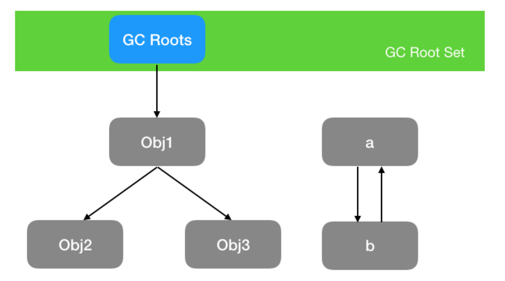

JVM：详解GC
一、判断垃圾回收的算法
先提前说两个算法，分别是：
引用标记算法
可达性分析算法
1.引用标记算法
引用标记算法是在Java对象头（Java对象头在介绍多线程的时候有详细的解释，直达链接：）中开辟空间，记录被引用的次数（Reference Count），如果A变量被其他对象引用时计数器+1，引用A变量的其他变量被删除则-1，如果计数器为0时，则判断A变量需要被回收。
举个例子：
1 | String str = "我不想上早八"; |
此时，在Java虚拟机栈（以下简称栈）开辟一个内存空间记录str，此时堆中的字符串常量池的“我不想上早八”，被引用的次数就是1（Reference Count=1），此时我做修改操作：
1 | String str = "其实我想上早七"; |
此时，在栈中的变量str原本引用常量池的”我不想上早八”引用次数为0，那么这一块就会被回收。
引用标记算法的回收机制遍布整个代码运行时期而没有集中于垃圾回收时期，因此不属于”Stop-The-World”的范围。
“Stop The World”是 Java 垃圾收集中的一个重要概念。在垃圾收集过程中，JVM 会暂停所有的用户线程，这种暂停被称为”Stop The World”事件。
这么做的主要原因是为了防止在垃圾收集过程中，用户线程修改了堆中的对象，导致垃圾收集器无法准确地收集垃圾。
引用标记算法存在的问题：
无法解决循环依赖的问题，看代码
1 | public class ReferenceCountingGC { |
在代码中a,b变量相互引用，即使将将 a 和 b 设置为 null，也无法将字符串的引用改变（即Reference Count没有被减到0）。从案例可以知道，这样写永远无法通知GC对这两个字符串进行收集。
2.可达性分析算法
现代虚拟机基本都是采用可达性分析算法来判断对象是否存活，可达性算法的原理是以一系列叫做 GC Root 的对象为起点出发，引出它们指向的下一个节点，再以下个节点为起点，引出此节点指向的下一个结点。这样通过 GC Root 串成的一条线就叫引用链），直到所有的结点都遍历完毕,如果相关对象不在任意一个以 GC Root 为起点的引用链中，则这些对象会被判断为垃圾对象,会被 GC 回收。

a, b 对象可回收，就一定会被回收吗?
并不是，对象的 finalize 方法给了对象一次垂死挣扎的机会，当对象不可达（可回收）时，当发生GC时，会先判断对象是否执行了 finalize 方法，如果未执行，则会先执行 finalize 方法，我们可以在此方法里将当前对象与 GC Roots 关联，这样执行 finalize 方法之后，GC 会再次判断对象是否可达，如果不可达，则会被回收，如果可达，则不回收！
注意： finalize 方法只会被执行一次，如果第一次执行 finalize 方法此对象变成了可达确实不会回收，但如果对象再次被 GC，则会忽略 finalize 方法，对象会被回收！这一点切记!
GC Roots 到底是什么东西呢，哪些对象可以作为 GC Root 呢？
- 虚拟机栈（栈帧中的本地变量表）中引用的对象
- 本地方法栈中 JNI（即一般说的 Native 方法）引用的对象
- 方法区中类静态属性引用的对象
- 方法区中常量引用的对象
关于这四个例子可以参考：GC Roots 是什么？哪些对象可以作为 GC Root？看完秒懂！-CSDN博客
二、八股：垃圾收集算法
阿里八股16题，我们来详细的谈谈：
1.标记清除算法
标记清除算法（Mark-Sweep）是最基础的一种垃圾回收算法，它分为 2 部分，先把内存区域中的这些对象进行标记，哪些属于可回收的标记出来（用前面提到的可达性分析法），然后把这些垃圾拎出来清理掉。

标记清除算法存在一个缺陷，在垃圾回收以后会产生内存碎片，无法应对需要一口气分配大内存的情况。
内存碎片化是指在内存分配和回收过程中，被释放的内存空间没有被合并成较大的连续空间，而是形成了许多小块的、不连续的内存区域。这会导致在后续需要分配大块连续内存时，系统可能无法找到足够的连续空间，从而影响程序的性能和稳定性。